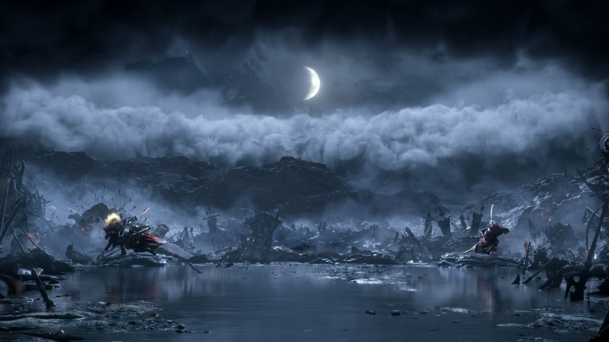
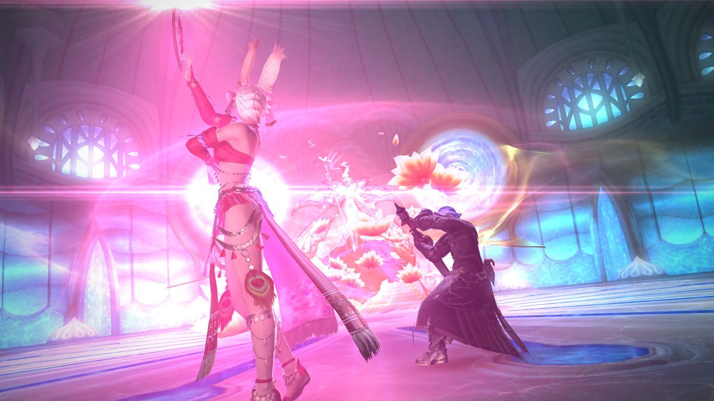

Take part in the next saga of the critically acclaimed FINAL FANTASY® XIV Online with the next legendary expansion pack SHADOWBRINGERS!
 Details
- Genre: MMORPG
- Players: 1-48+
- Perspective: 3rd Person
Quote
Shadowbringers weaves such a beautiful tale that it's tough not to gush about each and every strand of it individually. There might be some awkward job balancing changes here and there, but the fumbles are never enough to take away from how magnificent this expansion is as a whole. I arrived a stranger in Norvrandt, but I left as one of their own as even the simplest quests drew me in and made me truly care about the story being told there. Shadowbringers has only further solidified XIV's status as one of the greatest Final Fantasy games ever made.
- IGN